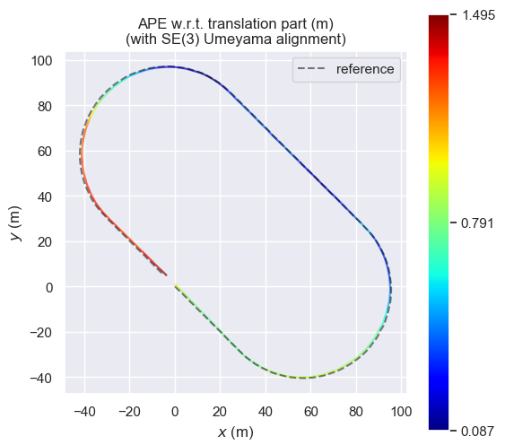

WeeklyReport-005-17Dec2023
工作周报
时间: 2023-12-11 ~ 2023-12-17
一、本周做了什么
1. 增加训练集/测试集数据，并进行训练
上周用于实验的数据太少了，导致模型训练出来的效果不好，本周对数据集进行了扩充，序列长度由5min增加到25min.
目前可供使用的数据有：
原始量测：IMU（a w）、GNSS（psr、 dopplar）
初步处理：IMU预积分数据、
融合输出：GVINS结果（GNSS有效）、VINS结果（GNSS无效）
真值系统：RTK真值
扩充后训练效果好了很多，效果展示如下：
数据集：
sports_field —– 5mins(4mins-train 1min-eval)
数据集：1510秒，train:eval = 8：2 = 20mins:5mins
NN 描述：
2 layers LSTM with 64 hidden layer
loss funcation : MSE
optimizer:Adam betas=(0.9, 0.999), eps=1e-08, weight_decay=0
input: imu pre-integration position
output: GVINS fusion position
参数情况：
Epoches:100
learn_rate:0.01
结果描述
Model name: lstm_N100_lr0.01_20231216-094112.pth (Available)
验证效果变好，eval_loss=0.0005173331317691145
loss 曲线：.png)
验证效果：.png)
参数还需要精调
2. 完成效果评估系统搭建
打通从传感器量测到融合输出到评估系统的全流程。例如使用evo评估工具对融合结果进行评估：
sport-field.bag
截取前5分钟数据
仅评估位置，不评估姿态（gt无姿态）
evo对齐方式：仅原点对齐
Case0 [对照-no align] GVINS- GNSS无故障原始输出
轨迹：
ape结果：
rpe结果：
Case1 [对照] 纯VINS
轨迹：
ape结果：

rpe结果：
在数据指标方面，选取了下图的指标（也是论文中常用的指标）进行评估：
3. 快速过了一遍深度学习的视频
花了一天的时间过了一遍深度学习的基础，算是扫盲
主要包含：
NN的基本知识（NN结构、损失函数、得分函数、forward、backward、训练的步骤、optimizer(Adam etc)）
CNN基础（卷积操作、step、padding、空洞卷积）
RNN基础、LSTM基础（结构、forward过程）
并整理了关键点笔记
4. 学习/修改LSTM网络，并整理了自己在学习期间的一些感悟
深入的学习的LSTM的原理，对：
1 | 单点预测（已知0到T-1，预测T） |
进行了深入研究，并结合股票预测的问题进行了验证，期间有一些心得体会，整理如下:
LSTM学习有感-股票预测
最近在研究LSTM预测相关知识，搞了两天，发现自己似乎进了一个大坑，记录一下这两天干的事和一些感悟
1. 实验过程描述
一条股票【收盘价】数据，85% 的数据用于训练，15% 的数据用于测试
2层LSTM，64个隐藏层
LEARNING_RATE = 1e-2, epoch = 150
loss是mse, adam优化器， drop_out=20%
采样滑窗50
单点预测：
用1-49天真实数据跑出第50天的预测数据
然后用2-50天的真实数据跑出第51天预测数据,
以此类推. 得到了一组预测数据
效果：
训练loss曲线：
test loss = 0.0009153251885436475 (很小)
效果好到离谱， 趋势很对
** 2. 错误原因分析**
lstm从纯股价并没学到有效信息，但是在单点预测中，连续两天股价变化其实很小，并且loss函数式mse，所以模型默认用上一天的数据加一点拟合的噪声来当作预测值。这样loss最小，但其实没有意义。
个人觉得评价指标和损失选得不行，没能反应问题的实质。
3. 一些tips
- 金融市场做预测，要预测收益率，不要预测价格，反应到车辆轨迹预测，要预测运动趋势的变动（速度、加速度变化），不要直接预测位置
5. 学习不同GNSS的时间框架，并整理
在扩充数据集的时候，遇到了UTC、GNSS不同星座的时间同步问题，这是一个非常恼人的问题，故而去仔细学习了这方面内容，并做了整理。已经上传到了我的个人博客，链接如下：
https://www.damonai.cn/2023/12/14/GNSS%E6%97%B6%E9%97%B4%E7%B3%BB%E7%BB%9F%E5%8F%8A%E5%85%B6%E8%BD%AC%E6%8D%A2/
二、下周怎么安排
- 搜索相关文件，对当前朴素的网络进行修改，并对网络参数进行调整优化
- 对目前已有的、下周即将开展的实验结果进行整理（指标、图表等）
- 结合文献，对当前整个GNSS deny环境下的定位思路进行梳理